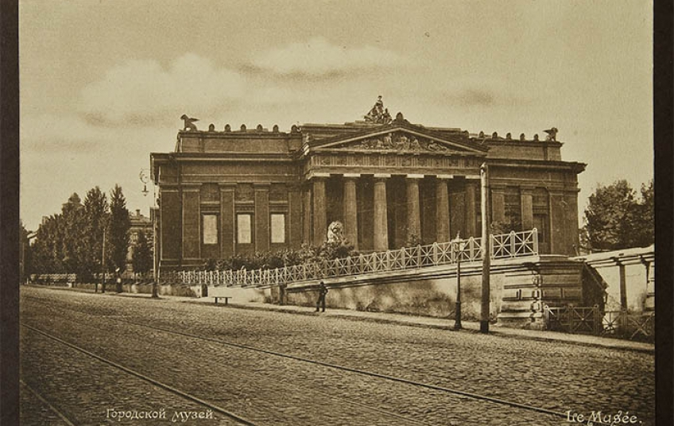
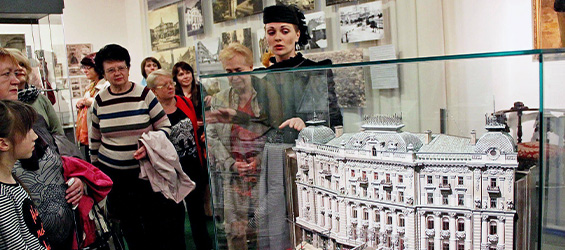

Музей історії міста Києва заснований 14 листопада 1978 року і відкритий у 1979 році, а наразі –
об’єднання 9 музеїв-філій, що органічно доповнюють загальну концепцію Музею. .


Основні етапи розвитку музею:
Відкриття музею (1978)
Реконструкція та розширення експозиції (1995)
2012 - Наші дні
Філії Музею Києва
Музей історії міста Києва – це мережа 9 музеїв, кожен з яких розкриває унікальні аспекти історії та культури: